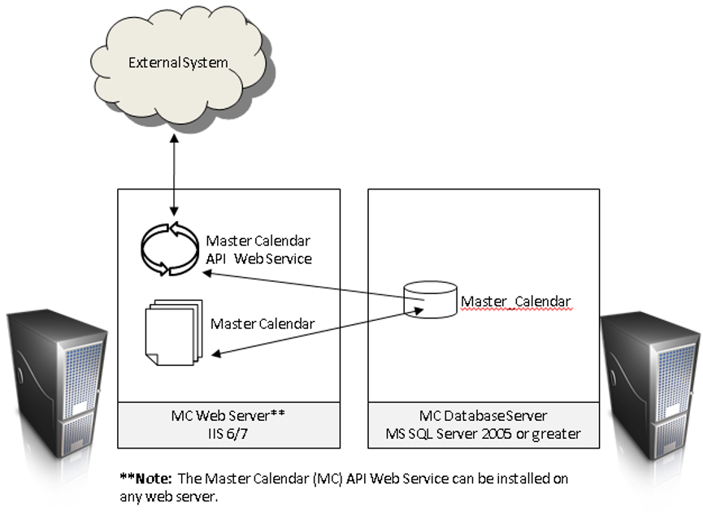

This section is intended for programmers that need detailed information about our web service based API.
This section will provide information on the following:
This section assumes you are familiar with the following:

If an offsite external third party integrator (i.e., outside of your network) requires access to the Master Calendar API, the Master Calendar API Web Service will need to be installed as a public facing website.
The Read Only API and the Updating API are both optional system features that might be licensed by Master Calendar customers. Note that the Updating API includes the Read Only API.
The Read Only API provides all of the calls to pull data (i.e., “get” calls) from the Master Calendar database. Calls to update or add events (i.e., “update” and “add” calls) also require the Updating API.
Updating API requires Master Calendar 4.0 or greater.
If you are unsure whether your organization is licensed for the API, or if you would like to learn more, please contact your account executive.